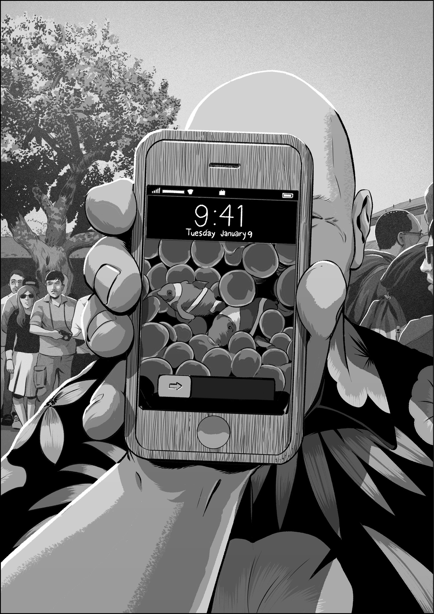

June 29, 2007, was a special day, and I decided to play hooky. Instead of heading into the office in the early morning and running through my usual routine—get coffee, sit down at my desk, scan the news, read my email, check my bug list in Radar, start programming—I stayed at home and surfed the web. After an hour or so, I drove from my house in Sunnyvale to downtown Palo Alto, about ten miles away. As I waded through the stop-and-go traffic in the morning rush on University Avenue, Palo Alto’s main street, I craned my neck to look up the road. When I got closer, I saw a line was already snaking around the block. I parked my car and walked over to check out the crowd. I didn’t have a specific goal for this trip, or even a clear idea for why I was going, except I wanted to be among people who were waiting for the Apple Store to open so they could buy their first iPhone.
A little more than six months after Steve’s keynote presentation, the iPhone was finally going on sale. The long lead time between product announcement and its release was uncharacteristic for Apple, but there had been regulatory hurdles to clear before Apple could sell phones and getting an early start on the necessary public filings would have given away the secret about the product. So Steve decided to reveal the iPhone months ahead of the date that people would be able to purchase one. He did his best to use this time gap to the company’s advantage, to make it seem like Apple was playing hard to get with its new smartphone, and at least among geeks and gizmo lovers, it succeeded. When the iPhone arrived in stores, many people couldn’t wait to get one.
One of those people was Bill Atkinson. As I walked past the front of the Apple Store and turned left down Kipling Street in Palo Alto, and peered ahead to see the end of the line in the distance, I saw him. Bill Atkinson, the software virtuoso, graphics whiz, one of the visionary contributors to the original Macintosh, developer of revolutionary apps like MacPaint and HyperCard. Since Bill had left Apple long ago, he had to wait in line just like everyone else.
Except Bill was never just like everyone else. He was excitedly holding court for the small clutch of people around him who knew who he was. He was energetic, and he was waving his arms around a little. As I walked up to him, I noticed he was gesticulating toward something in his hand, a curious-looking, phone-shaped something. When I got close enough to see it more clearly, I still couldn’t tell what it was, so I asked him.
Bill explained that he was so eager to get an iPhone that he couldn’t merely wait, so he did what any unconventional genius would do. He went into his well-outfitted home workshop with a piece of fine-grained, light-colored wood, and he milled a model of the iPhone. Then he printed out a high-resolution clownfish photo, just like the one Steve used on stage during the keynote announcement six months earlier, and he affixed the photo to his wooden model. In effect, Bill had made himself a toy iPhone. Just so he could hold it. I thought this was marvelous.

Bill and I had never met, but we knew many of the same people. I introduced myself after asking him about his wooden iPhone, and I told him that I had worked on the actual iPhone, though I’m not sure it registered. In any event, it was a thrill for me to see Bill Atkinson, one of the makers of the Mac, one of my heroes, waiting in line to buy his first iPhone.
Somehow, that felt like a mission accomplished, so I returned to my car and drove back to the Apple campus in Cupertino. When I badged into the Purple hallway, Scott Forstall was standing among a small group of programmers out in front of his office. This was unusual, but as I said, June 29, 2007, was a special day. When I walked over to him, I discovered he wasn’t merely meeting and greeting people as they walked by. He was pouring champagne. Scott handed me a glass, and we toasted the release of the iPhone.
My clearest recollection of those first days after the first iPhone shipments was . . . relief. I was relieved that my keyboard worked well enough that it didn’t sink the iPhone as handwriting recognition did the Newton.
Even so, that first iPhone had some glaring software gaps that seem remarkable now, and among them was a lack of cut, copy, and paste. It’s hard to believe that the iPhone was out in the world for nearly two full years without a basic feature that had shipped with the first Mac in 1984. That’s how technology development goes. The evolution of a new software system doesn’t necessarily follow the same course as previous ones.
As we made the first couple annual revisions to our software, Steve and Scott were committed to keeping our development teams small and focused, to maintain the culture we had used to develop the iPhone in the first place. Although the software team did start to grow during these years, we were still just a few dozen designers and programmers, and we kept working as fast as we could to make the iPhone into a full-featured platform.
By the time we started on what would become iOS 4 (Apple changed the name of the iPhone software to iOS in recognition of the operating system’s status in the company and its growing stature in the technology world), I got my promotion to Principal Engineer of iPhone Software (which shows Steve decided on the name change somewhat later in that yearly development cycle), and I started working on the iPad keyboard demo with Bas that we eventually showed to Steve.
After we shipped the iPad in 2010, Steve and Scott were interested in knowing whether the larger iPad screen size would make it easier to land several fingers on the display at once, enabling whole-hand gestures to control the experience of using multiple apps.
The original iPhone supported multitouch, and using pinch to zoom to scale a photo or a map was one of those intuitive gestures you see once and remember forever. Yet, as late as iOS 4, our software offered only two-finger gestures, even though the multitouch system could process as many as eleven simultaneous touches. You could, for example, mash the screen with all ten fingers at once and then reach down with your nose to tap the display. On the iPhone, obviously, there wasn’t room to do that. The screen was too small. On the iPad, there might be enough display area for comfortable five-finger gestures, or so we thought.
Scott wanted to find out what these five-finger gestures would be like. He wanted an investigation into using the iPad’s bigger screen to make better use of multitouch to make using multiple apps easier. We had made some software improvements for running multiple apps in iOS 4, and Scott wanted to expose this to users in a friendly way on the iPad. He pitched me on a goal for iOS 5: Add multitouch multitasking gestures for iPad. I signed up to do the work.
In a few weeks, I had a demo featuring early versions of three iPad multitasking gestures:
What exactly is a scrunch? I used the word to describe the gesture where you move your fingers on the screen in a grasping motion, as if the app you were using was a piece of paper and you were crumbling it up to throw it into a wastebasket. You know, a scrunch.
After a few weeks of polishing and more rounds of demos, we were feeling good about swiping, swooping, and scrunching. We were ready to show Steve.
In the fall of 2010, I walked through the door of Diplomacy, ready to demo iPad multitasking gestures. Scott, Greg, and Henri were there when I walked in. As usual, Steve was seated in an office chair. He looked exceedingly thin, but if he wasn’t feeling well, I couldn’t tell. Steve, Scott, Greg, and Henri sat on the mangy conference room couch facing him.
I figured that as soon as Scott was done with his introduction, I would begin my brief pitch before turning to the software. I was planning to say something like “Here are the multitasking gestures Scott was talking about. I have three . . .” But when Steve realized the topic was iPad multitasking gestures, he interrupted Scott, saying that he had been thinking about this feature, and he had come up with a way for going back to the home screen from an app. He then demonstrated his idea, waving his hand in front of his face like he was batting at a fly. After a swish or two, he made the gesture more specific, lowering his hand, bringing his palm parallel with the floor. Then he curled his fingers back toward himself, cupping his hand slightly, then he gave a quick outward flick of his wrist, like he trying to shoo an app away.
It was great to get an idea like this directly from Steve, and it was a clear depiction of a gesture that might be good. There was only one problem. I didn’t have that demo. My return-to-home-screen gesture was the five-finger scrunch, not Steve’s shoofly flick. I had no idea what I was supposed to do or say.
Scott came to my rescue. He explained to Steve that we had been developing these multitasking gestures for a while, that my demo was all ready to go, and he should take a look at what we had.
I woke up the iPad I was holding and took a step or two toward Steve’s chair. I tipped the screen toward him so he could see, supporting the back of the display with my left forearm as I grasped the right-edge bezel of the device firmly in my fingers. I certainly didn’t want the iPad to tumble out of my grip and fall into Steve’s lap. After I read from Steve’s body language that he could see what I was doing, I tapped a home screen icon to launch an app. Then I reached down toward the display with the open palm of my right hand, emphasizing the spread of my fingers. As I came close to touching the screen, I relaxed my hand slightly, letting my fingers take on a natural bend so that all my fingertips would meet the surface of the screen at the same time. When they did, I slowly scrunched, drawing all my fingers together. As I did this, the app shrank, zooming down incrementally in step with my gesture, until, when I let go, we were back at the home screen filled with icons.
Steve took the iPad from me, set his feet squarely on the floor in front of him, laid the iPad down in his lap, and tried launching and scrunching apps for himself. He made an overly large movement of his arm to draw his fingers away from the screen after scrunching. To be honest, it looked a little funny, but all I cared about was that every scrunch worked exactly as it should have.
He pronounced himself satisfied, and I was once again impressed by his ability to surrender his own idea when presented with a different one that worked. We moved on to the other two gestures, the swipe-up gesture that pushed up the current app to reveal an icon bar with recently used apps and the side-to-side swipe to move between your most recently used apps without going back to the home screen. I mentioned that the side-to-side gesture was something like his shooing-flick gesture, but Steve didn’t react. He just continued looking intently at the screen and using the gestures.
Before long, Steve discovered one extra detail I’d put into the side-to-side gesture. As you swiped left or right, the full-screen representation of apps slid on and off the left and right edge of the screen. The display would show only portions of two apps at any one time—the one you were on and the one you were swiping to. As we were designing this lazy Susan for apps, we decided that if you launched an app by tapping its icon from the home screen, then swiping to the right wouldn’t show another one. Since this side-to-side gesture was about getting quick access to your most recently used apps, and the app you just launched from the home screen was the “most recent” by definition, then there shouldn’t be any more apps in that direction. In my effort to communicate this, I had been inspired by the springy rebound you get when you reach the end of a scrolling list on iOS. I created an elastic animation for the side-to-side gesture, as if the most recently launched app was made of rubber if you tried to swipe to the right on it. The app stretched playfully in this situation, and when you let go, it snapped back into shape with a bloop-bloop-bloop. To me, this effect clearly conveyed that there were no more apps in that direction.
I thought the elastic animation was cool, but Scott hated it. He thought we would be taking liberties we shouldn’t by stretching apps in ways their designers couldn’t control. He could have insisted that I remove it, but I guess he sensed my enthusiasm.
Steve, in contrast, loved it. When he discovered this rubbery animation, he straightened himself a little in his chair, still balancing the demo iPad in his lap, and motioned at the screen with both hands outstretched, pointing definitively with all ten fingers toward the device in front of him. Without looking up, still staring at the display of the iPad, he declared his opinion on the elastic effect:
“This animation . . . this is Apple.”
* * *
Several months later, in one of my regularly scheduled one-on-one meetings with Henri to discuss my continuing iPad work, I suggested to him that it might be a good idea to have another demo with Steve, to show him multitasking gestures again, now that the software was close to its final form. It would give him one more chance to give feedback before we shipped iOS 5.
Henri responded with a shake of his head and a matter-of-fact “At this point, I think we should go with the multitasking gestures as they are.”
We finished our chat a few minutes later, and when I left Henri’s office and made my way down the hall, I heard his words again in my mind.
“At this point . . .”
Then it hit me. Henri knew: Steve wasn’t coming back.
About six weeks later, Steve resigned from his position as CEO of Apple. About six weeks after that, he was gone.1